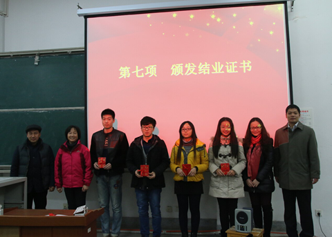

华中师范大学第九分党校第52期入党积极分子培训班圆满落幕 |
华新在线讯（通讯员 王鲁婧 王棣）1月4日晚，我校第52期入党积极分子培训班第九分党校结业典礼在9301教室隆重举行，学校党校常务副校长钟德涛教授、新闻传播学院党委书记韩君华、计算机学院党委书记程翔章、副书记郭庆、信息管理学院党委书记刘宝卿、教育信息与技术学院党委书记郭春娥、副书记谭冬霞以及四个学院的带队老师参加了结业典礼，典礼由新闻传播学院党委副书记夏守信主持。 |
 |
结业典礼由九项仪程组成，第一项“全体起立 奏唱国歌”，全体成员用饱含激情与敬重的歌声拉开了典礼的序幕。之后，一张张党课、实践活动、风采展示的照片，一段段优秀的党校培训心得带大家回顾与总结了此次党课的学习与收获，随后，本次分党校班主任刘敏华做了一个多月来的工作总结。刘敏华首先表达了对各学院带队老师以及同学们大力支持工作的感谢，提出了对班长以及诸位班干组长的表扬，并寄希望同学们以后站出去都可以像一面旗帜，以一名正式共产党员的标准严格要求自己，争取早日成为优秀党员的美好期望。 |
本期结业典礼最大看点在于创新模式的学生发布会，四个学院的学生代表依次发言，再由学生对“发布人”进行提问，学生代表分别提到了对能获得参与此次党课培训的机会的感恩与珍视，回顾了过去一个月来党课培训的收获，阐述了自己更加明确的入党动机，表达了对将来成为一名合格的共产党员的期待。 |
其中来自新闻传播学院的李绮同学的发言中提到了忠诚的信仰问题以及坚定地共产主义信念，号召大家真正做到从思想上入党，以严格的组织纪律要求自己，争取成为优秀的共产党员，赢得大家的一致赞赏。在最后的对发言人提问的环节中，各学院代表分别为同学们的入党动机、党校培训最深刻的印象、自己能使党接纳的优点以及用几个字形容共产党的问题做了细致的解答。 |
韩君华在宣布此次培训优秀学员名单时首先送给同学们三句话以作忠告，“找到自己的时间，填充时间等于填充生命”“天道酬勤，要克服懒惰坚持到最后”“珍爱生命”并期望大家在2015年不断进步，做一个温暖、上进、有内涵的人。而后，程翔章宣布了此次培训优秀小组名单并向大家致以新年的问候。 |
在优秀学员及优秀小组颁奖后，校党校常务副校长钟德涛回顾了开学典礼带给大家的振奋以及震撼，并总结了此次党课培训领导的高度重视、工作人员的精心组织、内容形式的敢于创新以及培训过程中注重实践的四点经验，最后再次强调希望同学们都能真正做到从思想上加入党组织，争取早日成为党组织优秀的一份子。 |
结业典礼在奏唱国际歌圆满落下帷幕。据悉，第52期第九分党校入党积极分子培训班的组织工作有诸多创新，开班仪式首创了视频寄语，包括此次隆重举行的结业典礼，给同学们很强的仪式感，更能感受到分党校对党校学习的重视、党校学习的严肃性和责任感。 |